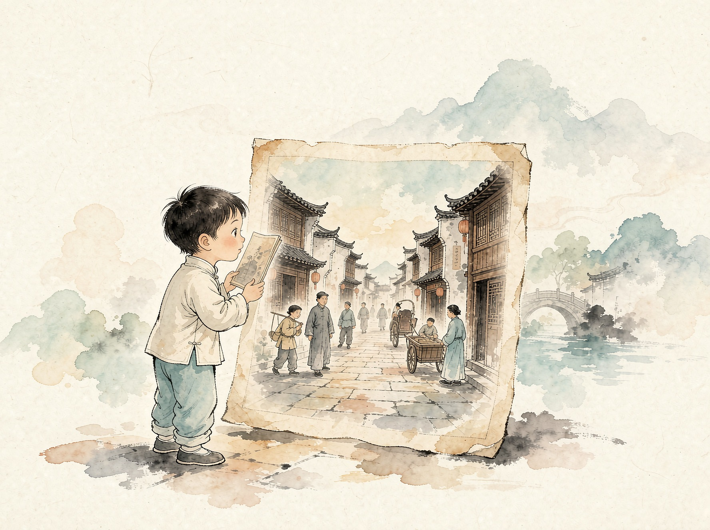

通古今，若亲目
通古今，若亲目：承接上一课「读史者，考实录」。
材料既实，还要以心贯通：把古今连成一线，读至深处，古人的处境如在眼前。
通，不是记住年表，是懂得彼此相因；若亲目，不是煽情代入，是能在具体局面里看见人怎么难、怎么选。
古今相隔为阴，以心相照为阳。
对比：读史者，考实录 / 通古今，若亲目
上句是向外求证，此句是向内求通。考据得其形，贯通得其神；有形无神则史为账簿，有神无形则史为戏文。
对比前文阴阳太和：古与今，本是一条河的上下游。执古以非今，是以阴拒阳；逐今而弃古，是以阳忘阴。通者，知上游如何成今日之河，因而不苛责、也不盲从。
勘破俗见：两类常见偏差。其一，以为「若亲目」就是尽情想象、替古人落泪，情绪愈满愈好；其二，以为通古今就是背熟朝代年表，能串起年代便算通。契合般若范式：佛说古今，即非古今，是名古今。古今是因缘相续的假名，中间并无实体间隔；执古今为二，则永不相通。
古人和我们隔得很远，可他们遇到的难处，和我们很像。
读书时试着站到他的位置上想一想：他那时能怎么办？
想明白了，几千年前的事就像发生在眼前。
但也不要只顾感动，还要看清他为什么只能这样选。
通，是心里连起来，不是眼泪流下来。


落到心上理解
口传与档册相抵，取舍的尺度在哪里？
尺度在「处境」。两种说法各自对应一部分人的处境：官有官的讳，民有民的怨。把它们放回各自的处境，抵牾之处往往正是关节所在。
通古今，不在替古人做判断，而在看清他受什么限制。看清限制，才不会用今天的便利去责备昨天的窘迫，也不会用昨天的答案来解决今天的问题。
不隔、不混、不苛、不慕；能进能出，即是无住。
若亲目就是把感情投进去，越感动越好
是看清处境与限制，情绪可以有，判断不能丢
通古今就是背熟朝代年表
年表是骨架，贯通的是因果与人心
古人愚昧，今人高明，不必细究
各有其限，各有其难；看清限制，方不轻慢
- 读史要能把古今连成一条线。
- 设身处地想一想，古人的难处与我们并不遥远。
- 看清他的处境和限制，比评判他聪明还是愚笨更重要。
- 心里通了，书上的字才活起来。
一、勘俗见。把「代入」与「滥情」分开。代入是为了看清处境，滥情是把古人当成自己情绪的容器。
二、现代对照。孩子与同学起冲突时，让他先说出对方的处境，再谈谁对谁错；这一招与「若亲目」同源。
三、承接常变主线。时代条件、器物制度（可变之相）；人情之常、取舍之难（不变之常）。
四、承接教与学二分。史料与脉络由师长给出，设身处地的体会须学人自入。
承接选择力练习：评价一个人之前，先写下他当时只有哪几条路可走。
通古今，若亲目
一字义与句读
通：贯通、通晓，非记诵。古今：古与今为一线，非两截。若亲目：如在眼前，指理解之真切。
全句释义：把古今贯通起来，读史读得真切，古事如在眼前。
二命题考辨
表层因缘
「考实录」易流为琐碎，「若亲目」易流为滥情。二句连读，恰成互补：以考据立其真，以贯通立其活。真而不活则死，活而不真则妄。
深层因缘
所谓「通」，含三层：一通天时地利，知此事发生于何种条件；二通制度因革，知此时之制从何而来；三通人心向背，知当事者为何如此取舍。三层俱到，古事方能「若亲目」；缺一层，则所见仍是剪影。
现代对照认知
跨代沟通、跨文化理解的难处，与此同理：不是把对方拉到自己的框架里评判，而是先还原他的处境与限制。能还原，才有真正的对话。
般若范式互参
古今、彼我、时距，皆是因缘假名。
联动三才五蕴太极空杯模型：能通之心是杯中之空，本无古今之隔；年代、地理、制度是器相，划出层层的界。器界可越，空体无隔。
呼应「本乎数」：一世有一世之数，数异则事异；知其数异，故不援古例硬套今事。
延伸义理：
《金刚经》：过去心不可得，现在心不可得，未来心不可得。三心皆不可得，而相续不断。
《庄子》：齐古今，等生死。非混灭差别，是不为差别所困。
三跨典互参（老庄、般若对照）
《道德经》：执古之道，以御今之有。所执者道，非古之形。
《庄子》：小知不及大知，小年不及大年。眼界一开，古今之隔自薄。
串联前文：上一课求「真」，此课求「通」；真通兼备，读史方成己之学。
四和前面课程的张力
次第链条继续延伸：
……读史者，考实录 → 通古今，若亲目
呼应「曰仁义，礼智信」：通古今者，能见五常在不同时代的活法与困境；
呼应「教之道，贵以专」：专于一朝一代，方能通其细节；泛览则处处皆浅；
呼应「玉不琢，不成器」：设身处地是琢心之工——能入其境，方成通识。
「若亲目」的分寸在哪里：过则滥情，不及则隔膜，如何拿捏？
读史者多为今人，如何在还原处境时不把自己的观念倒灌进古人？
孩子读史，先讲人物还是先讲制度？次序不同，通的效果有何差别？